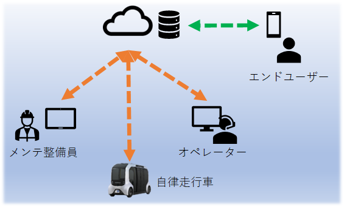
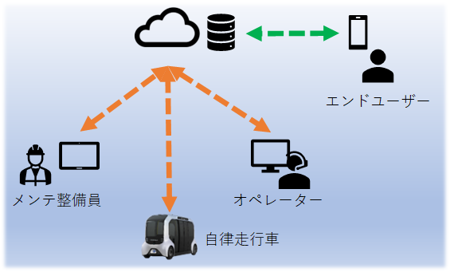
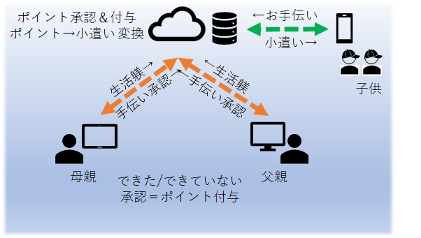
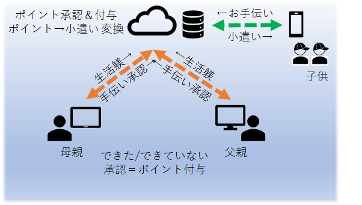

【受講動機】
| なりたい姿 | |
|---|---|
| デジタル人材 | 「モビリティカンパニーへの変革」人、モノ、コトを繋げることで新しい可動性の価値を創出するミッションにおいて、 それらを提供するにはソフトウェア開発力が有用であり、そこに貢献できるデジタル人材になりたい。 |
| 顧客ペインに柔軟に対応 | モビリティサービス実証ではPowerAppsなどローコードツールを活用することでアジャイルに改善することできるが、 最終的に顧客要望にカスタムに答えられる「商品」に昇華するにはコーディング力が必要と考える。 |
SDVのメジャープレーヤー | Softwear Defined Vehicleにおいて、 先行するTeslaやBYDに追いつき追い越す。 |
| 生成AI時代にも活躍 | AI進化するとコーディングは不要と言われている しかし、AIへの指示にプログラマならではのロジカルな思考と生成コードをカスタマイズできる能力。 |
AIはプログラムに責任を持ってくれない。少なくとも数年内※は顧客要件を理解し実現するのはプログラマで、生成AIを効率的に使うだけ
社会課題/会社・自部署のミッションを鑑みるに、コーディングスキルはますます求められると考えるため「なりたい姿」を目指します。
【テーマ選定にあたって】
【業 務】 自動運転モビリティサービスの事業企画
【典型解】 PC/スマフォ/タブレットからアクセスするWebシステム

【典型解】 PC/スマフォ/タブレットからアクセスするWebシステム

【プレゼンのテーマ】
【目 標】 典型解のシステム構成を踏襲しつつ、生活の中で使えるツールを作りたい
【テーマ】 おてつだい＆せいかつ
【内 容】 生活課題を解決するツール
 おてつだい報酬： 小遣い欲しさに手伝いやっただけ、親から見ると不十分 → 承認制
生活しつけ： 何度言い聞かせても改善しない＆体罰は与えない → マイナスポイント制
【テーマ】 おてつだい＆せいかつ
【内 容】 生活課題を解決するツール
 おてつだい報酬： 小遣い欲しさに手伝いやっただけ、親から見ると不十分 → 承認制
生活しつけ： 何度言い聞かせても改善しない＆体罰は与えない → マイナスポイント制